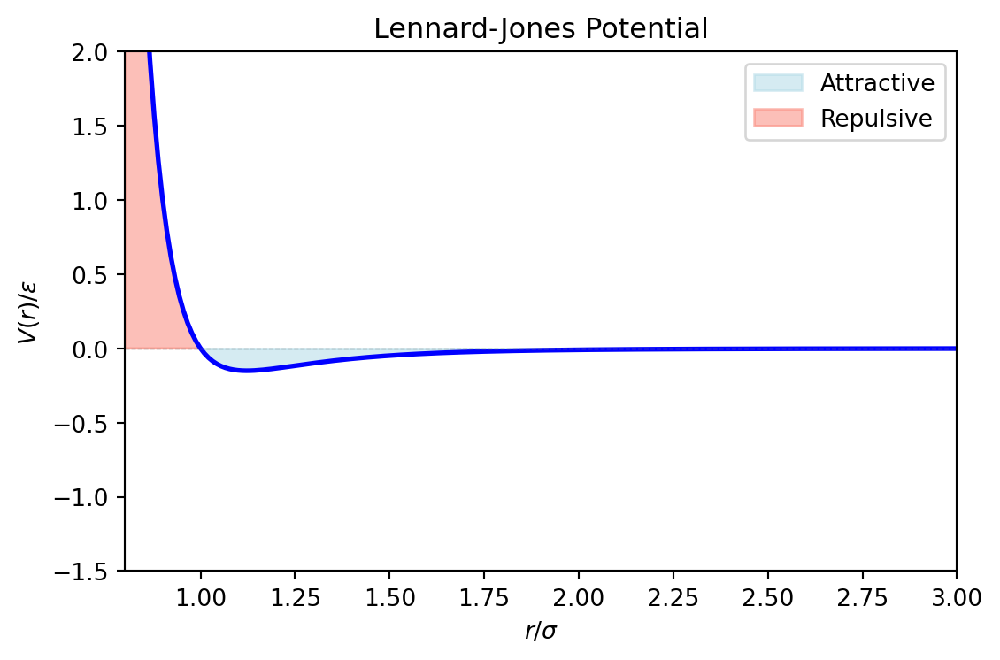

Force Fields
TipIn this section
- Non-bonded interactions (LJ, Coulomb): formula, meaning, parameters
- Bonded interactions (bonds, angles, dihedrals): when they’re needed
- Cross-terms and mixing rules
- How force field choices affect simulation output
What Is a Force Field?
A force field is a set of mathematical functions and parameters that describe interatomic forces. It is an approximation — no force field is “correct”, only more or less appropriate for a given system.
The components of a force field:
| Component | What It Describes | Typical Functional Form |
|---|---|---|
| Non-bonded | Van der Waals, electrostatics | LJ, Coulomb |
| Bonded | Chemical bonds | Harmonic, Morse |
| Angle | Three-body bending | Harmonic, cosine |
| Dihedral | Four-body torsion | Trigonometric series |
Non-Bonded Interactions
Van der Waals (Dispersion/Repulsion)
The Lennard-Jones (LJ) potential is the most common:
\[V(r) = 4\epsilon \left[ \left(\frac{\sigma}{r}\right)^{12} - \left(\frac{\sigma}{r}\right)^6 \right]\]
| Parameter | Physical Meaning | Typical Values (real units) |
|---|---|---|
| \(\epsilon\) | Depth of energy well (binding strength) | 0.1–0.2 kcal/mol for atoms |
| \(\sigma\) | Distance where energy = zero | 3.0–4.0 Å for light atoms |
Term-by-term breakdown:
- r⁻¹² term: Steep repulsion at short range (Pauli exclusion)
- r⁻⁶ term: Softer attraction at longer range (London dispersion)
Visual representation:
The minimum of the LJ potential is at \(r_{min} = 2^{1/6}\sigma \approx 1.12\sigma\).
LJ in LAMMPS
pair_style lj/cut 10.0 # LJ with cutoff at 10 Å
pair_coeff 1 1 0.15 3.5 # type 1-type 1: epsilon=0.15, sigma=3.5
pair_coeff 1 2 0.10 3.3 # type 1-type 2: mixed valuesCutoff considerations: - LJ is truncated at rcut — introduces error - Typical rcut = 10–12 Å for water - Energy drift indicates cutoff too small - Never exceed half the minimum box dimension
Coulombic Electrostatics
\[V(r) = k \frac{q_1 q_2}{r}\]
Long-range and never truly zero. This is why special methods (Ewald, PPPM) are needed — see ?@sec-electrostatics.
In LAMMPS:
pair_style lj/cut/coul/long 10.0 # LJ + real-space Coulomb; k-space handles long-range
pair_coeff * * 0.15 3.5 # LJ parameters for all pairs
pair_coeff 1 1 0.0 0.0 # no LJ for some pairs
kspace_style pppm 1e-5 # long-range solverCombined Short-Range Potentials
pair_style lj/cut/coul/long 10.0 # Most common for electrolyte simulations
pair_style born/coul/long 10.0 # For ionic crystals with repulsion term
pair_style 12-6-4/long # For metal oxides (adds 1/r⁴ term)The pair style MUST be compatible with the kspace style:
| Pair Style | Kspace Style | Notes |
|---|---|---|
lj/cut/coul/long |
pppm or ewald |
Standard for electrolytes |
lj/cut/coul/cut |
none | Direct Coulomb only; error if cutoff too small |
coul/long only |
pppm |
No LJ; pure Coulomb |
Bonded Interactions
Bonds
Harmonic bond (most common):
\[V(r) = k (r - r_0)^2\]
bond_style harmonic
bond_coeff 1 300 1.0 # k=300 kcal/mol/Ų, r0=1.0 ÅAngles
Harmonic angle:
\[V(\theta) = k (\theta - \theta_0)^2\]
angle_style harmonic
angle_coeff 1 40 109.5 # k=40 kcal/mol/rad², theta0=109.5°Dihedrals
Proper dihedral (trigonometric series):
\[V(\phi) = \sum_{n=0}^{N} k_n \cos(n\phi - \phi_n)\]
dihedral_style opls # OPLS-style dihedrals
dihedral_coeff 1 0.5 0.0 3 0.0 # k, n, phi0 parameters
NoteWhen Bonded Interactions Matter
- Water models (TIP3P, TIP4P): explicit O-H bonds and H-O-H angle
- Organic molecules: bonds, angles, dihedrals all needed
- Simple electrolytes (NaCl in water): no bonds; only non-bonded interactions
- Ionic crystals: bonds may be implicit (pair_style only)
When in doubt: check your water model’s structure. If it has bond_style and angle_style, you need those coefficients.
Cross-Terms and Mixing Rules
When two different atom types interact, we need parameters for the cross-pair.
Lorentz-Berthelot Mixing
pair_coeff 1 1 epsilon1 sigma1 # type 1 - type 1
pair_coeff 2 2 epsilon2 sigma2 # type 2 - type 2
# type 1 - type 2 is computed as:
epsilon_12 = sqrt(epsilon1 * epsilon2)
sigma_12 = (sigma1 + sigma2) / 2Explicit Cross-Parameters
pair_coeff 1 2 epsilon12 sigma12 # override mixing ruleFor electrolyte-electrode interactions: explicit cross-parameters are often better than mixing rules.
Force Field Parameters — Where They Come From
Water Models
| Model | Atoms | Bonds | Angles | ε (kcal/mol) | σ (Å) | Notes |
|---|---|---|---|---|---|---|
| SPC/E | 3 | 1 | 1 | 0.155 | 3.166 | Rigid; commonly used |
| TIP3P | 3 | 1 | 1 | 0.155 | 3.150 | O-H = 0.957 Å |
| TIP4P | 4 | 2 | 1 | 0.155 | 3.154 | 4-site; better density |
Ion Parameters
From Joung & Cheatham (2008): parameters matched to specific water models.
| Ion | ε (kcal/mol) | σ (Å) | Notes |
|---|---|---|---|
| Na⁺ | 0.0874 | 3.40 | Matched to SPC/E |
| Cl⁻ | 0.100 | 4.45 | Matched to SPC/E |
| K⁺ | 0.100 | 4.47 | Larger than Na⁺ |
Electrode Parameters
Electrode LJ parameters are typically:
- Large ε: creates hard-wall repulsion to prevent electrolyte penetration
- No Coulomb: metal screens electrostatic interactions internally
- Typical values: ε = 0.01–0.1 eV, σ = 2.5–3.5 Å (metal units)
Force Field → Output Connection
Understanding how force field choices affect observable properties:
| Input Change | Physical Effect | Observable Change |
|---|---|---|
| Increase ε (LJ) | Stronger binding | Lower diffusivity; higher density |
| Increase σ | Larger effective size | Lower density; slower diffusion |
| Increase cutoff | More accurate (to a point) | Lower energy drift; more computation |
| Add bond constraints | Remove fast vibrations | Can use larger timestep; affects vibrational spectra |
| Change water model | Different H-bonding | Different density (~1 g/cm³ vs ~0.98); different dielectric |
Energy Components Breakdown
Potential Energy = Pair + Bond + Angle + Dihedral + Kspace
= (LJ + Coulomb_real) + bonded terms + Coulomb_recipPairEngdominates for simple electrolytesKspaceEngis significant for charged systems (long-range electrostatics)- Large
BondEngorAngleEngindicates instability (atoms too close)
Common Force Field Configurations
Simple Electrolyte (NaCl in SPC/E water)
units real
atom_style charge
pair_style lj/cut/coul/long 10.0
pair_coeff Na Na 0.0874 3.40
pair_coeff Cl Cl 0.100 4.45
pair_coeff Na Cl 0.0935 3.925 # Lorentz-Berthelot mixed
pair_coeff OW OW 0.155 3.166 # water O (SPC/E)
pair_coeff HW HW 0.0 0.0 # water H (no LJ)
pair_coeff Na OW 0.114 3.28
pair_coeff Cl OW 0.124 3.81
kspace_style pppm 1e-5Electrode-Electrolyte Interface
units metal
atom_style charge
pair_style lj/cut/coul/long 10.0
# Electrode LJ (soft repulsion, not bonding)
pair_coeff 1 1 0.01 3.0 # Au-Au (typical metal electrode)
# Electrolyte LJ (water + ions)
pair_coeff 2 2 0.01 3.0 # counter-electrode same type
pair_coeff 3 3 0.155 3.166 # SPC/E water O
pair_coeff 3 4 0.0 0.0 # water H
# Cross terms (electrode-electrolyte)
pair_coeff 1 3 0.005 3.1
pair_coeff 2 3 0.005 3.1
kspace_style pppm/electrode 1e-5Next Steps
- ?@sec-electrostatics — How LAMMPS handles the long-range Coulomb problem
- ?@sec-physical-conditions — Thermostats, barostats, and the physical meaning of ensemble selection